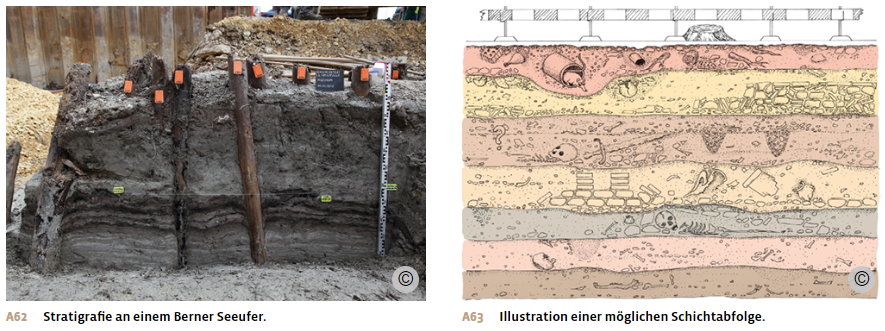
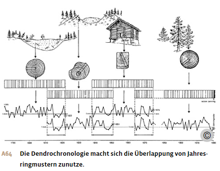
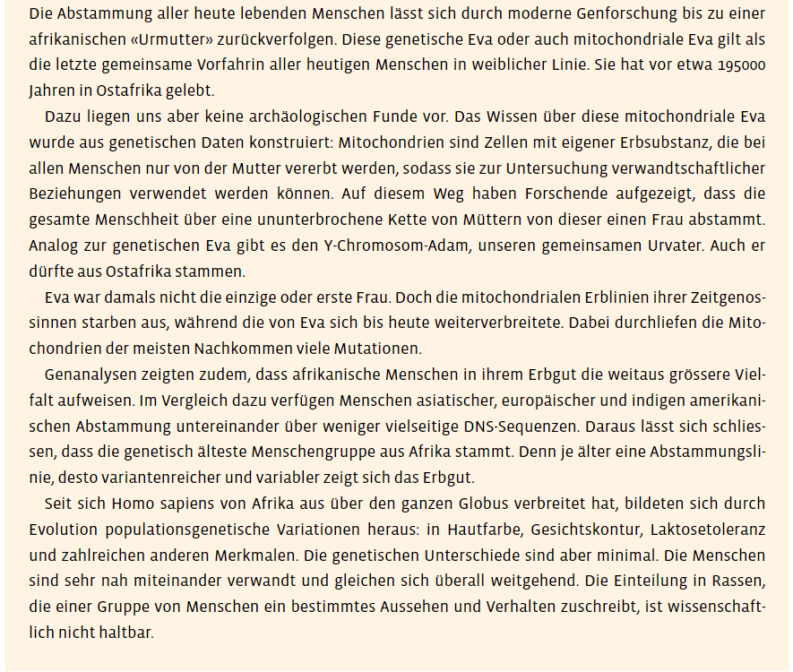

Materialdossier: Archäologie
Vollständiger Inhalt des Unterrichtsdossiers · Archäologie.docx
Die archäologische Forschung
Ein unterirdisches Archiv
Funde aus dem Neolithikum brachten der Archäologie ab 1850 in ganz Europa einen grossen Aufschwung. Insbesondere die Pfahlbauten lösten einen Forschungsboom aus. Mit natur- und geisteswissenschaftlichen Methoden wurden nun vermehrt menschliche Hinterlassenschaften gesucht und analysiert.
Unter Seen, Feldern, Gletschern, Strassen, Häusern – überall unter unserer Landschaft liegen Überreste aus vergangener Zeit. Diese archäologischen Überreste aus allen Epochen bis zur Neuzeit bilden ein unterirdisches Archiv. Solche Quellen dokumentieren die materiellen Aspekte der Geschichte. Dazu gehört zum Beispiel, wie die Menschen sich ernährten, welches Handwerk sie betrieben, wie Häuser gebaut wurden oder wie das Klima war.
Für die Untersuchung und den Schutz der Zeugnisse aus vergangener Zeit ist der Staat zuständig, in der Schweiz die Kantone. So verfügt jeder Kanton über eine Kantonsarchäologie. Diese muss in erster Linie archäologische Güter schützen. Meist geschieht dies, indem diese am Ort belassen werden, wo sie sind – nämlich unter der Erde. Zu diesem Zweck versucht die Archäologie herauszufinden, wo archäologische Stätten liegen könnten. Diese Erkundung geschieht mithilfe verschiedener Methoden: Es werden Luftbilder analysiert, gepflügte Felder untersucht, schriftliche Quellen analysiert und Sondierungsgrabungen auf kleinem Raume gemacht. Dann wird ein archäologisches Inventar mit allen Fundstellen erstellt.
Oft können archäologische Stätten aber nicht bewahrt werden, weil sie zum Beispiel einem Neubau weichen müssen. Dann unternimmt die Archäologie eine Not- oder Rettungsgrabung. Grabungen nur aus wissenschaftlicher Neugier gibt es kaum mehr.
Grabung und Dokumentation
Wenn ein archäologisches Team eine Grabung macht, soll damit meist die Geschichte einer Siedlung ergründet werden. An diesem Ort haben Menschen in der Vergangenheit etwas gebaut, benutzt, verändert. Wenn nach Bau und Benutzung eine Siedlung zerfiel oder zerstört wurde, wurde auf dem Schutt oft wieder etwas Neues aufgebaut. Der Siedlungsschutt wurde so jeweils zu einer neuen Schicht im Boden, die sich auf eine Reihe von darunterliegenden, älteren Bodenschichten legte.
Daraus ergibt sich die relative Chronologie der Baugeschichte des Grabungsortes. Die Abfolge der Schichten nennt man Stratigrafie, vom lateinischen «stratum» für «Schicht» und dem altgriechischen «graphein» für «schreiben». Oft sind die Schichten nicht klar erkennbar oder durcheinandergeraten, sei dies durch Naturereignisse wie zum Beispiel Überschwemmungen oder Erdrutsche oder durch menschliche Aktivitäten wie Landwirtschaft oder Bau.
Bei archäologischen Grabungen werden die Schichten nacheinander freigelegt und gereinigt. Dann werden sie beschrieben, gezeichnet, fotografiert und vermessen; die gefundenen Gegenstände werden geborgen. Die genaue Dokumentation ist wichtig, weil Schicht für Schicht entfernt und somit auch zerstört wird.
Jede Kantonsarchäologie verfügt über ein Archiv, in dem die Funde und die Dokumentation aufbewahrt werden. So stehen sie auch in Zukunft der Forschung zur Verfügung. Die Artefakte müssen für die Aufbewahrung gereinigt und beschriftet werden. Funde, die an der Luft zerfallen können, werden konserviert und in speziell klimatisierten Lagern aufbewahrt.

Auswertung und Veröffentlichung
Eine wichtige Aufgabe der archäologischen Auswertung ist es herauszufinden, aus welcher Zeit die verschiedenen archäologischen Schichten stammen. Die bereits bekannte relative Chronologie, die besagt, was früher und was später war, soll also mit einer absoluten Chronologie mit Jahreszahlen präzisiert werden. Dafür gibt es je nach Fundstücken unterschiedliche Methoden.
Gegenstände können mit bereits bekannten Stücken in einem ähnlichen Stil verglichen werden. Dies gilt insbesondere für Keramik, die sehr oft ausgegraben wird, aber auch für Werkzeuge oder Schmuckstücke. Münzen sind oft mit einer Aufschrift oder einem Herrscherbild geprägt, was eine gute zeitliche Einordnung ermöglicht.
Mit der Radiokarbon- oder C14-Methode kann das Alter von organischem Material, wie zum Beispiel Knochen oder Holz untersucht werden. Sie beruht auf dem Prinzip, dass ein lebender Organismus bis zu seinem Tod Kohlenstoff (C) aufnimmt, darunter in der Form des 14C-Isotops. Dieses radioaktive Isotop zerfällt, wenn ein Lebewesen stirbt oder ein Baum gefällt wird. Nach 5’730 Jahren ist nur noch die Hälfte vorhanden. Funde aus der Ur- und Frühgeschichte können aber nur begrenzt mit der C14-Methode untersucht werden. Sie funktioniert nur bei Objekten, die zwischen 300 und 50’000 Jahre alt sind. Zudem ist diese Altersbestimmung nicht präzise.
Eine in der Regel genauere Altersbestimmung liefert die Dendrochronologie: Mit diesem Verfahren werden die Funde mithilfe der Jahresringe mitgefundener Holzreste ermittelt. Denn je nach Klima ist der Jahrring eines Baumes unterschiedlich breit. Dabei überlappen sich die Jahrringmuster verschieden alter Bäume. Diese Überlappungen ermöglichen die Erstellung von Jahrringkalendern. Ein europäischer Jahrringkalender reicht sogar bis ins Jahr 10’461 v. Chr. zurück und umfasst damit das gesamte Holozän. Die Datierung von Hölzern kann mit dieser Methode teilweise auf das Jahr genau bestimmt werden.
Nachdem die absolute Chronologie bestimmt ist, werden die Funde mit Texten beschrieben, bildlich festgehalten und schliesslich gedeutet. Dabei werden auch Nachbardisziplinen der Archäologie beigezogen: Die Geologie hilft bei der Analyse des Bodens und kann zum Beispiel herausfinden, auf welche Weise dieser erodiert ist. Die Archäozoologie konzentriert sich auf Tierknochen; so können beispielsweise Speisereste Auskunft darüber geben, welche Tiere verzehrt wurden. Menschliche Skelette werden wiederum von der historischen Anthropologie untersucht. Diese kann Angaben über Geschlecht, Alter, Krankheiten und Verletzungen machen. Die Archäobotanik erforscht Überreste von Pflanzen wie zum Beispiel Holz, Früchte oder Pollen. Daraus kann erschlossen werden, was die Menschen gegessen oder angebaut haben. Und auch Erkenntnisse über das Klima und zur Vegetationsgeschichte sind möglich.
Danach werden die Erkenntnisse zu den Funden in grössere Zusammenhänge gestellt, einerseits zur Geschichte des Ortes oder der Region, aber auch zur Geschichte einer Epoche oder einem besonderen Thema der Archäologie, zum Beispiel der Siedlungs- oder Bestattungsweise.
Schliesslich werden Beschreibung und Analyse der Funde veröffentlicht. Es gehört zu den Aufgaben der Archäologie, ihre Erkenntnisse im Kreis der Wissenschaft zu teilen – und auch die Öffentlichkeit zu informieren, etwa durch Vorträge, Führungen oder in Ausstellungen und Museen.

Aus: Notz, Thomas; Frey, Walter (Hg.): Geschichte fürs Gymnasium. Steinzeit bis 1450. Bern 2024, S. 57-60.

Aus: Notz, Thomas; Frey, Walter (Hg.): Geschichte fürs Gymnasium. Steinzeit bis 1450. Bern 2024, S. 20.
Aufträge
1. Was dokumentieren die Quellen aus dem unterirdischen Archiv?
2. Mit welchen Methoden werden archäologische Stätten gesucht? Weshalb werden sie aufgespürt?
3. Wie nennt man die Abfolge von Bodenschichten? Und weshalb ist sie wichtig?
4. Was bedeutet «relative Chronologie» – was «absolute Chronologie»?
5. Mit welchen Methoden wird ermittelt, aus welcher Zeit die archäologischen Funde stammen?